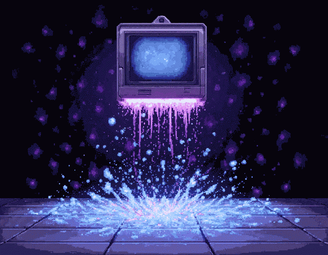

Teatr Telewizji

Gdzie ogladac
vod.tvp.pl/teatr
ninateka.pl
Ulubione
Kryminal, Zagadka
Mord w Hurtowni
Komedia
Pan Jowialski
Cukier Stanik
Zaklad karny - o stowe
Next Ex
Rozmowy przy Wycince Lasu
Niesamowici Bracia Limbourg
Porwac Sie na Zycie
Upiór w Kuchni
Sci-fi
Dzien Dobry, Wszyscy Umrzemy
Humani
Dramat
Cyrograf
Razem
Back to home